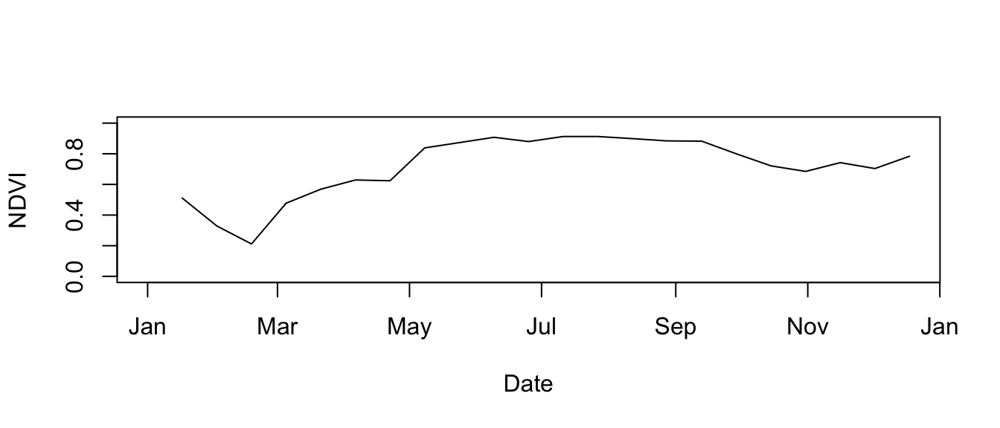

MODISTools
Koen Hufkens
2019-05-08
Source:vignettes/modistools-vignette.Rmd
modistools-vignette.RmdThe MODISTools package has as goal to facilitate the interface between R and the MODIS Land Product Subset API at the Oak Ridge National Laboratory Distributed Active Archive Center (DAAC). This programmatic interface to the ‘MODIS Land Products Subsets’ web services allows for easy downloads of ‘MODIS’ time series (of single pixels or small regions of interest) directly to your R workspace or your computer. Below an example is provided on how to download a MODIS time series as well as list ancillary data.
Listing products / bands / dates
In order to assess which products are available, which product bands are provided and which temporal range is covered one has to list these ancillary data. All these options can be queried using the mt_*() functions.
To list all available products use the mt_products() function.
products <- mt_products()
head(products)
#> product
#> 1 Daymet
#> 2 MCD12Q1
#> 3 MCD12Q2
#> 4 MCD15A2H
#> 5 MCD15A3H
#> 6 MCD19A3
#> description
#> 1 Daily Surface Weather Data (Daymet) on a 1-km Grid for North America, Version 3
#> 2 MODIS/Terra+Aqua Land Cover Type (LC) Yearly L3 Global 500 m SIN Grid
#> 3 MODIS/Terra+Aqua Land Cover Dynamics (LCD) Yearly L3 Global 500 m SIN Grid
#> 4 MODIS/Terra+Aqua Leaf Area Index/FPAR (LAI/FPAR) 8-Day L4 Global 500 m SIN Grid
#> 5 MODIS/Terra+Aqua Leaf Area Index/FPAR (LAI/FPAR) 4-Day L4 Global 500 m SIN Grid
#> 6 MODIS/Terra+Aqua BRDF Model Parameters (MAIAC) 8-Day L3 Global 1 km SIN Grid
#> frequency resolution_meters
#> 1 1 day 1000
#> 2 1 year 500
#> 3 1 year 500
#> 4 8 day 500
#> 5 4 day 500
#> 6 8 day 1000Once you have settled on the product you want to use in your analysis you will have to select a band, or multiple bands you want to download for a given location. To list all available bands for a given product use the mt_bands() function. You can use the mt_bands() function to list all available bands for a given product. Below I list all bands for the MOD13Q1 vegetation index product.
bands <- mt_bands(product = "MOD13Q1")
head(bands)
#> band description
#> 1 250m_16_days_VI_Quality VI quality indicators
#> 2 250m_16_days_blue_reflectance Surface Reflectance Band 3
#> 3 250m_16_days_pixel_reliability Quality reliability of VI pixel
#> 4 250m_16_days_NIR_reflectance Surface Reflectance Band 2
#> 5 250m_16_days_MIR_reflectance Surface Reflectance Band 7
#> 6 250m_16_days_NDVI 16 day NDVI average
#> units valid_range fill_value scale_factor add_offset
#> 1 bit field 0 to 65534 -1 <NA> <NA>
#> 2 reflectance 0 to 10000 -1000 0.0001 0
#> 3 rank 0 to 3 -1 <NA> <NA>
#> 4 reflectance 0 to 10000 -1000 0.0001 0
#> 5 reflectance 0 to 10000 -1000 0.0001 0
#> 6 NDVI ratio - No units -2000 to 10000 -3000 0.0001 0Note the band names (listed in band column) you want to download, this variable will need to be passed in the final download statement.
Similarly you can list all available dates (temporal coverage) for a given product and location defined using a latitude and longitude with the mt_dates() function.
Downloading MODIS time series
Once you decide on which data to download using the above functions you can use these parameters to download a time series using the mt_subset() function. The below query downloads MOD13Q1 based normalized vegetation index (NDVI) for the year 2014. The location is named ‘testsite’. The output is saved to a variable called subset in the R workspace (as defined by the parameter internal = TRUE, when set to FALSE the data is written to file).
# download data
subset <- mt_subset(product = "MOD13Q1",
lat = 42.534171,
lon = -72.179003,
band = "250m_16_days_NDVI",
start = "2004-01-01",
end = "2004-12-30",
km_lr = 0,
km_ab = 0,
site_name = "testsite",
internal = TRUE,
progress = FALSE)
head(subset)
#> xllcorner yllcorner cellsize nrows ncols band
#> 1.1 -5914186.84 4729496.17 231.656358264 1 1 250m_16_days_NDVI
#> 2.1 -5914186.84 4729496.17 231.656358264 1 1 250m_16_days_NDVI
#> 3.1 -5914186.84 4729496.17 231.656358264 1 1 250m_16_days_NDVI
#> 4.1 -5914186.84 4729496.17 231.656358264 1 1 250m_16_days_NDVI
#> 5.1 -5914186.84 4729496.17 231.656358264 1 1 250m_16_days_NDVI
#> 6.1 -5914186.84 4729496.17 231.656358264 1 1 250m_16_days_NDVI
#> units scale latitude longitude site product
#> 1.1 NDVI ratio - No units 0.0001 42.53417 -72.179 testsite MOD13Q1
#> 2.1 NDVI ratio - No units 0.0001 42.53417 -72.179 testsite MOD13Q1
#> 3.1 NDVI ratio - No units 0.0001 42.53417 -72.179 testsite MOD13Q1
#> 4.1 NDVI ratio - No units 0.0001 42.53417 -72.179 testsite MOD13Q1
#> 5.1 NDVI ratio - No units 0.0001 42.53417 -72.179 testsite MOD13Q1
#> 6.1 NDVI ratio - No units 0.0001 42.53417 -72.179 testsite MOD13Q1
#> start end complete modis_date calendar_date tile
#> 1.1 2004-01-01 2004-12-30 TRUE A2004001 2004-01-01 h12v04
#> 2.1 2004-01-01 2004-12-30 TRUE A2004017 2004-01-17 h12v04
#> 3.1 2004-01-01 2004-12-30 TRUE A2004033 2004-02-02 h12v04
#> 4.1 2004-01-01 2004-12-30 TRUE A2004049 2004-02-18 h12v04
#> 5.1 2004-01-01 2004-12-30 TRUE A2004065 2004-03-05 h12v04
#> 6.1 2004-01-01 2004-12-30 TRUE A2004081 2004-03-21 h12v04
#> proc_date pixel value
#> 1.1 2015154120947 1 -3000
#> 2.1 2015154121734 1 5108
#> 3.1 2015154122102 1 3286
#> 4.1 2015154125157 1 2115
#> 5.1 2015154125222 1 4775
#> 6.1 2015154125302 1 5687The output format is a tidy data frame, as shown above. When witten to a csv with the parameter internal = FALSE this will result in a flat file on disk.
Note that when a a region is defined using km_lr and km_ab multiple pixels might be returned. These are indexed using the pixel column in the data frame containing the time series data. The remote sensing values are listed in the value column. When no band is specified all bands of a given product are returned, be mindful of the fact that different bands might require different multipliers to represent their true values.
When a large selection of locations is needed you might benefit from using the batch download function mt_batch_subset(), which provides a wrapper around the mt_subset() function in order to speed up large download batches. This function has a similar syntax to mt_subset() but requires a data frame defining site names (site_name) and locations (lat / lon) (or a comma delimited file with the same structure) to specify a list of download locations.
# create data frame with a site_name, lat and lon column
# holding the respective names of sites and their location
df <- data.frame("site_name" = paste("test",1:2), stringsAsFactors = FALSE)
df$lat <- 40
df$lon <- -110
# an example batch download data frame
head(df)
#> site_name lat lon
#> 1 test 1 40 -110
#> 2 test 2 40 -110Worked example using NDVI values
The above downloaded subset shows the normalized difference vegetation index (NDVI), and an indicator of plant health, density and or complexity for one year at the experimental Harvard Forest site. When plotted the yearly pattern of rising and falling NDVI values shows vegetation growth in spring, and senescence or leaf drop in fall. Values lower than ~0.4 are contaminated by snow or clouds.
# create a plot of the data - accounting for the multiplier (scale) component
date <- as.Date(subset$calendar_date)
NDVI <- subset$value * as.double(subset$scale)
NDVI[NDVI <= 0.2] <- NA
plot(date,
NDVI,
xlab = "Date",
ylab = "NDVI",
ylim = c(0,1),
type = "l")
Conversion of corner coordinates
Corner coordinates of the pixel area extracted are provided, these can be used to calculate the coverage of the extracted area. Coordinates are provided in the original sinusoidal grid coordinates and first have to be transformed into latitude longitude (for convenience).
# convert the coordinates
lat_lon <- sin_to_ll(subset$xllcorner, subset$yllcorner)
# bind with the original dataframe
subset <- cbind(subset, lat_lon)
head(subset)
#> xllcorner yllcorner cellsize nrows ncols band
#> 1.1 -5914186.84 4729496.17 231.656358264 1 1 250m_16_days_NDVI
#> 2.1 -5914186.84 4729496.17 231.656358264 1 1 250m_16_days_NDVI
#> 3.1 -5914186.84 4729496.17 231.656358264 1 1 250m_16_days_NDVI
#> 4.1 -5914186.84 4729496.17 231.656358264 1 1 250m_16_days_NDVI
#> 5.1 -5914186.84 4729496.17 231.656358264 1 1 250m_16_days_NDVI
#> 6.1 -5914186.84 4729496.17 231.656358264 1 1 250m_16_days_NDVI
#> units scale latitude longitude site product
#> 1.1 NDVI ratio - No units 0.0001 42.53417 -72.179 testsite MOD13Q1
#> 2.1 NDVI ratio - No units 0.0001 42.53417 -72.179 testsite MOD13Q1
#> 3.1 NDVI ratio - No units 0.0001 42.53417 -72.179 testsite MOD13Q1
#> 4.1 NDVI ratio - No units 0.0001 42.53417 -72.179 testsite MOD13Q1
#> 5.1 NDVI ratio - No units 0.0001 42.53417 -72.179 testsite MOD13Q1
#> 6.1 NDVI ratio - No units 0.0001 42.53417 -72.179 testsite MOD13Q1
#> start end complete modis_date calendar_date tile
#> 1.1 2004-01-01 2004-12-30 TRUE A2004001 2004-01-01 h12v04
#> 2.1 2004-01-01 2004-12-30 TRUE A2004017 2004-01-17 h12v04
#> 3.1 2004-01-01 2004-12-30 TRUE A2004033 2004-02-02 h12v04
#> 4.1 2004-01-01 2004-12-30 TRUE A2004049 2004-02-18 h12v04
#> 5.1 2004-01-01 2004-12-30 TRUE A2004065 2004-03-05 h12v04
#> 6.1 2004-01-01 2004-12-30 TRUE A2004081 2004-03-21 h12v04
#> proc_date pixel value longitude_ll latitude_ll
#> 1.1 2015154120947 1 -3000 -72.17891 42.53333
#> 2.1 2015154121734 1 5108 -72.17891 42.53333
#> 3.1 2015154122102 1 3286 -72.17891 42.53333
#> 4.1 2015154125157 1 2115 -72.17891 42.53333
#> 5.1 2015154125222 1 4775 -72.17891 42.53333
#> 6.1 2015154125302 1 5687 -72.17891 42.53333Together with meta-data regarding cell size, number of columns and rows the bounding box of the extracted data can be calculated.
# convert to bounding box
bb <- apply(subset, 1, function(x){
mt_bbox(xllcorner = x['xllcorner'],
yllcorner = x['yllcorner'],
cellsize = x['cellsize'],
nrows = x['nrows'],
ncols = x['ncols'])
})
# plot one bounding box
plot(bb[[1]])
# add the location of the queried coordinate within the polygon
points(subset$longitude[1],
subset$latitude[1],
pch = 20,
col = "red")
Conversion to (gridded) raster data
Although the package is often used to deal with single pixel locations the provisions to download a small region of interest defined by kilometers left-right (west-east) or top-bottom (north-south) allows you to grab small geographic regions for further analysis. The default tidy dataframe format isn’t ideal for visualizing this inherently spatial data. Therefore a helper function mt_to_raster() is available to convert the tidy dataframe to a gridded (georeferenced) raster format.
Below a small region (20x20km) is downloaded around the seaside town of Arcachon, France for the MODIS land cover product (MCD12Q1). The data is converted using mt_to_raster() with a reproject parameter set to true to plot latitude and longitude coordinates (instead of the default sinusoidal ones).
# download the MODIS land cover (IGBP) data
# for a region around the French city and basin of Arcachon
LC <- mt_subset(product = "MCD12Q1",
lat = 44.656286,
lon = -1.174748,
band = "LC_Type1",
start = "2005-01-01",
end = "2005-3-20",
km_lr = 20,
km_ab = 20,
site_name = "testsite",
internal = TRUE,
progress = FALSE)
# list the tidy data
head(LC)
#> xllcorner yllcorner cellsize nrows ncols band units
#> 1.1 -111658.35 4946789.87 463.312716528 81 81 LC_Type1 class
#> 1.2 -111658.35 4946789.87 463.312716528 81 81 LC_Type1 class
#> 1.3 -111658.35 4946789.87 463.312716528 81 81 LC_Type1 class
#> 1.4 -111658.35 4946789.87 463.312716528 81 81 LC_Type1 class
#> 1.5 -111658.35 4946789.87 463.312716528 81 81 LC_Type1 class
#> 1.6 -111658.35 4946789.87 463.312716528 81 81 LC_Type1 class
#> scale latitude longitude site product start end
#> 1.1 Not Available 44.65629 -1.174748 testsite MCD12Q1 2005-01-01 2005-3-20
#> 1.2 Not Available 44.65629 -1.174748 testsite MCD12Q1 2005-01-01 2005-3-20
#> 1.3 Not Available 44.65629 -1.174748 testsite MCD12Q1 2005-01-01 2005-3-20
#> 1.4 Not Available 44.65629 -1.174748 testsite MCD12Q1 2005-01-01 2005-3-20
#> 1.5 Not Available 44.65629 -1.174748 testsite MCD12Q1 2005-01-01 2005-3-20
#> 1.6 Not Available 44.65629 -1.174748 testsite MCD12Q1 2005-01-01 2005-3-20
#> complete modis_date calendar_date tile proc_date pixel value
#> 1.1 TRUE A2005001 2005-01-01 h17v04 2018054111127 1 17
#> 1.2 TRUE A2005001 2005-01-01 h17v04 2018054111127 2 17
#> 1.3 TRUE A2005001 2005-01-01 h17v04 2018054111127 3 17
#> 1.4 TRUE A2005001 2005-01-01 h17v04 2018054111127 4 17
#> 1.5 TRUE A2005001 2005-01-01 h17v04 2018054111127 5 17
#> 1.6 TRUE A2005001 2005-01-01 h17v04 2018054111127 6 17
# convert to raster, when reproject is TRUE
# the data is reprojected to lat / lon if FALSE
# the data is shown in its original sinuidal projection
LC_r <- mt_to_raster(df = LC, reproject = TRUE)
# plot the raster data as a map
plot(LC_r)
A google maps representation is given below.